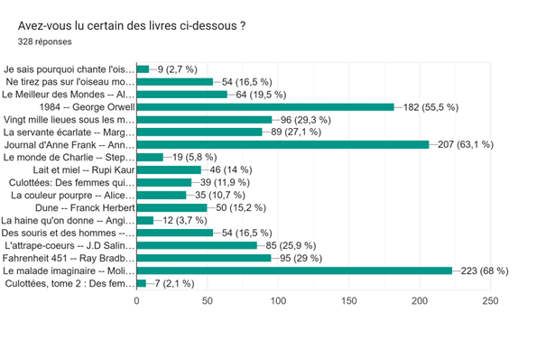
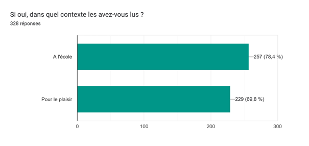
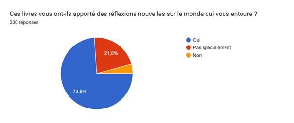
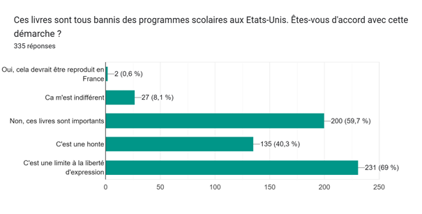

I - Q&A with partners
Throughout my project, I have had the chance to work with two different partners: the first one,Mrs. Marissa(librarian at the Library of Congress in Washington D.C.), and the second one,Mrs. Yuliana Tamayo Latorre(journalist at PEN America).
Here is the list of every question I asked them and the answers I got back. Some questions have become irrelevant to my project as it evolved.
Q&A with Mrs. Marissa
What do you think, from a personal point of view, of the banning of books?
The Library of Congress does not actually have to deal with book bans; most bannings or attempts to censor take place in school libraries and public libraries. The American Library Association has some good information/stats on bannings- our collection policy statements guide our recommending officers on the decisions of what we add to the collections by content, subject, and format.
Additionally, we do recognize that the Library holds materials and descriptions that contain potentially offensive language, images, and/or negative stereotypes. Access to those materials provides important evidence of history and culture. We are a universal and historical collection, the content within our collections reflects that.
Do you happen to know which books are the most borrowed or consulted in the library (in the Main Reading Room)?
We actually aren’t allowed to talk about the kinds of questions we get at the desk/online and the materials that people are using, but I can broadly say that people typically come to us when they are researching topics and are looking for hard to find items, primary sources, or when they’ve exhausted the resources available to them locally. Given that we are the home for history, humanities, social sciences, and genealogy, we get many questions related to: African American Studies, American History, Politics, Popular culture, Gender and Women’s Studies, Art and Architecture, Literature, Ancestry/genealogy, Religion, Psychology…
What does your job involve? What is your favorite part of this job?
I work specifically as a supervisory librarian, for the Main Reading Room, managing the reference librarians who work in that space; Official title is: Head, Main Reading Room; Humanities and Social Sciences Section; Researcher and Reference Services Division. My day to day work involves coordinating the work of the librarians within the Main Reading Room, managing schedules, events/programming, dealing with patron requests, getting involved with difficult research questions, etc. I love the library environment, research, solving problems, and sharing information – a career as a librarian checks all these boxes.
What do you think is the role of literature?
Books and libraries in general, serve to democratize information and - making information available to all people; there is also a relationship to greater consumption and cultivation of culture and creative pursuits, exposure to art, critical thinking, and abstract thoughts, imagination, developing lifelong learning etc. - all these tings are connected - museums and libraries both serve to preserve, archive, and promote all these principles/ideals. And let us now minimize, thar like art or music and other creative pursuits, literature can also serve as an escape for people.
Q&A with Mrs. Latorre
According to you, can the U.S. still be considered as a democracy, if it limits a constitutional right such as the freedom of expression?
PEN America believes that freedom of expression is a core component of a democracy; attacks on free expression and other constitutional rights are attacks on democracy itself. Here are some examples of PEN’s statements on the relationship of freedom of expression to democracy:
- With regard to book bans: “Our reporting on book bans remains a bellwether of a larger campaign to restrict and control education and public narratives, wreaking havoc on our public schools and democracy. ... These attacks on students’ rights and educational institutions are the symptoms of a much larger disease: the dismantling of public education and a backsliding democracy.”
- With regard to higher education: “In a pluralistic democracy, for free speech and academic freedom to be upheld effectively, they must be upheld for all.”
- With regard to press freedom: “The press is a guardrail essential to an informed citizenry in a democracy. Its place as the only profession explicitly named and protected in the Constitution establishes its position clearly on that front. ... Defending a free press is defending democracy itself, and it’s time to stand up for both.”
What are the powers of the different entities taking care of the book bans: federal state, state, school board, teachers, parents, students...?
The book banning campaign is in part driven by politics, with state lawmakers and executive branch officials pushing for bans in some cases. Examples of political pressure:
- Direct political pressure by politicians and other state officials
- Increasing legislation fueling book bans through statewide bans (in the case of Utah and South Carolina), targeting specific content (LGBTQ+ representation, etc.) or criminalize librarians
The expansion of organized groups/organizations pushing for bans:
- It ranges from local groups to national-level organizations, some of whom focus on “parental rights”
- Some of these groups harbor white supremacist, Christian nationalist, and homophobic views
- For more information, please refere to the FAQ of PEN America
When a book is banned from school libraries, can students still find it in public or private libraries? Can a book be entirely banned from the USA?
Even though banned books can still be found or purchased outside of school libraries, school libraries play a vital role in keeping literature accessible to students. There is no guarantee that students will have easy or equitable access to books in other locations, have money to purchase a book, or even know a book exists. Many students in the United States attend schools without libraries or librarians, or, in districts without ready access to public libraries. Not all parents and families have the time or means to access public libraries, or to purchase books. This makes the ready availability of materials to students in both school and public libraries unique and consequential to American democracy. Efforts to censor or ban books have also spread to prisons, public libraries, and booksellers, belying the idea that current efforts to censor books are only focused on schools.
What is the position of the U.S. regarding secularism in schools (since some families wanted to remove books that opposed their religious beliefs)?
When talking about secularism in schools, there are multiple First Amendment rights at play -- religion, press, expression/speech, as well as students' civil rights-- and can be hard to navigate within school environments.
Certainly many legal cases have tried to answer these questions. There's no easy answer here! No clear line has been drawn on these issues and continues to be debated. Mahmoud v Taylor is a recent case argued at the Supreme Court that attempted to answer whether including LGBTQ+ books in schools infringe against a subset of students' religious freedom.
While I can’t talk on behalf of the U.S., PEN America argued that the restriction of LBGTQ+ book violates students' first amendment rights, for multiple reasons.
- We opposed censoring or segregating books that feature LGBTQ+ people because all families deserve to be seen and heard.
- To enable opt-outs regarding this content is harmful and sends a devastating message to students: that their lives and families are so offensive and dangerous that they can’t even be discussed in schools
- Specifically targeting books about one group of families and children is discriminatory and leaves this group vulnerable to mistreatment and bullying
- Every child deserves the freedom to read and learn. Children need to know that there are other people like them in the world, that they aren’t alone. They need the freedom to read about different people with different views, from diverse ethnic backgrounds and abilities.
- The freedom to read means that children are free to have their own thoughts and beliefs and to make their own choices. It helps prepare them to be good citizens, to navigate and succeed in a complex and diverse world.
- Feel free to read more about the case on this website
Does the phenomenon of book banning have an effect on the books that are written? Do authors still talk about LGBTQIA+ communities, the American history,... or are they afraid of being banned?
Book bans leave authors at increased financial risk due to a reduction in school visits or events, and the potential subsequent impact on their future book sales. Some authors have reported the emotional impacts of these book bans on their creativity, citing concerns about potential blowback to future works, which cause them to feel the need to self-censor.
Throughout the 2024-2025 school year, book bans affected the works of almost 2,600 artists, including 2,308 authors, 243 illustrators and 38 translators. Several authors of banned books have penned multiple titles and been branded with a “Scarlet Letter” – a phenomenon dubbed by PEN America where a ban on one title from a specific author is followed by efforts to ban their entire collection.
In your opinion, what is the role of literature?
Literature, particularly diverse books, play a crucial role in our society by providing people the opportunity to step out of their comfort zone and explore other worlds, experiences, emotions, they wouldn't encounter otherwise. In doing so, diverse literature can help students further develop empathy, understanding, and respect for others – something much needed in our society nowadays.
Every reader deserves to see themselves and their loved ones positively represented in the books available to them and that is what literature has to offer. Banning diverse books silences the voices of already marginalized people – it dehumanizes them and their experiences. Book banning campaigns often target “inappropriate” or “obscene” content, which can send the message that the people and identities presented in these books are also “inappropriate” or should be banned. In doing so, book banning pushes the idea that only certain voices or experiences matter.
Can the US be sanctioned by the international community for rewriting history (and not mentioning systemic racism, Columbus' atrocities...)?
The US can and has been criticized at the international level for censorship in education and rewriting history as a threat to free expression, the right to education, and other human rights protected by international treaties. Recently, the independent United Nations expert on the right to education raised these issues in her report on a visit to the US. She also wrote a report on academic freedom, mentioning educational censorship in the US and issues around teaching history in multiple countries.
Another way the international community can criticize the US for these issues is the UN Universal Periodic Review (UPR), which is a peer review of each country's human rights record every several years. As part of the typical review process, the US was scheduled to undergo review in late 2025 but refused to participate. PEN America submitted this joint report as part of the UPR which focuses on educational censorship, including limits on teaching history. (You can find examples of the international community's criticisms and recommendations for improving human rights issues in this UN document from the last review in 2020.). These are examples of how the international community has spoken critically about the US government for violating human rights obligations. However, the term sanction also has other specific meanings, which these examples don't cover
II - Survey and results
For my cross-cultural project, I chose to do two surveys (one concerning French students, the other concerning American students), in order to have a global understanding of the situation. However, both surveys have very clear limitations:
French survey
Everyone in the highschool answered the survey (teachers, students...) which is a positive point because I have a lot of answers thanks to that, however,it is hard to analyze the answersas they do not reflect the opinion of students only.
While rereading the survey, I figured that the questions I asked were clearly biased, and my point of view on the matter could be seen: it is therefore not truly impartial, as it should have been.
Have you read any of those books?

If yes, did you read them at school or furing your free time?

Did those books help you develop a new reflection?

Do you agree with the policy of book bans?

American survey
I received onlytwo answerswhich is a clear limitation. I therefore cannot assume that these answers are representative of a majority of American students.
It would have been interesting to ask the American studentstheir statein order to study the correlation between the opinion of the student and their geographical location.
Have you read any of those books?

If yes, did you read them at school or furing your free time?

Did those books help you develop a new reflection?

Do you agree with the policy of book bans?

Do you want to share something?
"Fahrenheit 451 is one I read on my own. It should never be banned from schools due to the fact it talks of the danger of censorship and the power of the government. I read it at the age of 13 and Bradbury's many works are always a delight to read. He makes several good points while also keeping a good storyline."
III - Personal benefits
Throughout the creation of this project, I have had the opportunity to develop new sets of skills in various domains:
- Communication skills:how to find a partner, how to contact the said-partner, how to draft a clear mail...
- Personal skills:becoming more confident, more organized, learning how to take the initiative and draft an entire project.
- Informatic skills:learning how to code a website and how to do a survey.